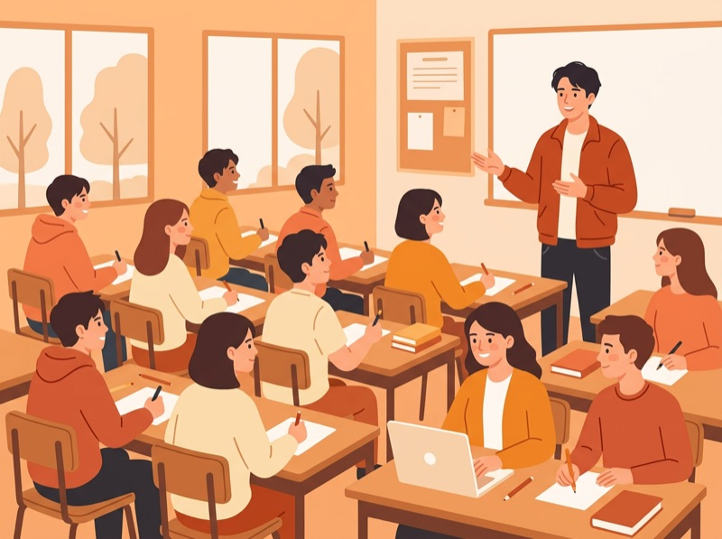
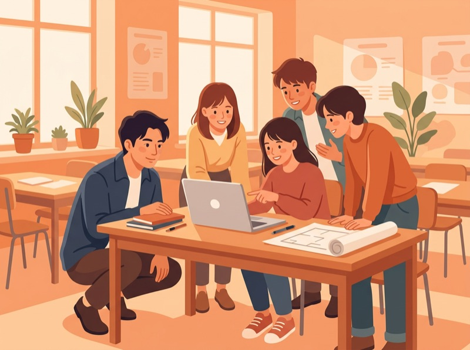

テーマ
3年生（システム科）の先輩が、卒業進級制作の最終審査前の心構えや制作のアドバイスを、ざっくばらんに話す（約10〜15分）。そのあと先輩が各チームを回り、企画書と今の状況を見て、質問にも自由に答える。先輩が帰ったあと、Googleフォームでアウトプットする。2限は、アドバイスを受けて、チームで卒業進級制作に取り組む
キーワード
先輩の話 / 企画書と今の状況を見てもらう / 質問タイム / フォームでアウトプット / アドバイスを作業に変える / チームで制作
必要な準備
チームの企画書と、今の状況が分かるもの（動く画面、リポジトリ）をすぐ開けること。メモ用の紙かノート。Classroomにログインできること（フォームを開くため）。
この回のゴール
- 先輩の話から、自分たちの卒業進級制作に使えることを、メモに書き出せる
- 自分たちの企画書と今の状況を、先輩に短く説明でき、聞きたいことを質問できる
- フォームに、聞いたこと・自分たちに当てはまることを書ける
- もらったアドバイスから、今日やることをチームで選び、分担して進められる
先輩は、もうすぐ卒業します。聞けるのは今日のうちです。遠慮せずに、聞きたいことを聞いてください。先輩に今後してもらえるとありがたいことも、あとでフォームに書けます。
授業の流れ
2コマ連続（90分 + 90分 = 計180分）。途中休憩あり。
1限 前半
約40分
準備し、先輩の話を聞き、質問する
今日の流れ：聞く → 見てもらう → 書く → 作る
① 見てもらう準備（約5分）
- チームで、企画書と、今の状況（動く画面・リポジトリ）をすぐ開けるようにする
- 先輩に聞きたいことを、チームで1〜2個メモする。たとえば:
- 最終審査で、よく聞かれることは何か
- 審査の前に、やっておけばよかったことは何か
- チームで進めるとき、困ったことと、どう乗り越えたか
- AIを使うとき、気をつけていたことは何か
② 先輩の話（約10〜15分）

先輩の話を聞く聞きながら、メモを取る（絵の例）
- 最終審査の前の心構えや、卒業進級制作でのアドバイスを、ざっくばらんに聞く（話の内容は、先輩が決めます）
- 聞きながら、「自分たちの作品にも使えそう」と思ったことを、そのままメモする。あとでフォームを書くときに使う
③ 全体への質問タイム（約15〜20分、自由。先輩の話の長さに合わせて、40分に収める）
- 聞きたいことを、手を挙げて自由に質問する。チームで考えた質問を使ってもよい
- 質問は、他のチームの人にも役に立つことがあります。答えもメモしておく
1限 後半
約50分
先輩がチームを回る：企画書と今の状況を見てもらう
先輩に見せる3つ

チームを回って見てもらう企画書と今の状況を、先輩に見せる（絵の例）
- 先輩が各チームを回って、企画書と今の状況を見ます。順番と1チームの時間は、先生の案内に従う
- 見てもらうときは、企画書 → 今の状況 → 困っていることの順に話す。言われたことは、チームのメモに残す（だれか1人が書く係）
- 先輩を待っている間は、自分たちの卒業進級制作を進める。先輩が来たら、手を止めて見てもらう
- 最後に、お礼を伝える。先輩に今後してもらえるとありがたいこと（たとえば、後輩の質問に答えてもらう、など）も、この時間に直接聞いてよい
見せるのは、完成品でなくて構いません。途中の状態を見てもらうほうが、役に立つアドバイスがもらえます。
休憩
10分
2限 前半
約50分
フォームで書き、アドバイスを今日の作業に変える
① Googleフォームでアウトプット（約10分）
- 先生がClassroomで案内するGoogleフォームに答える（フォームの場所と、答え方の単位（一人ひとりか、チームか）は、先生の案内に従う）
- 質問は、たとえば次のようなものです（実際の質問は、先生のフォームに従う）:
- 先輩の話で、心に残ったアドバイスを1つ
- それは、自分（自分たちのチーム）のどこに当てはまるか
- 最終審査までに、やることを1つ
- 卒業前の先輩に、今後してもらえるとありがたいこと
- 先輩へのお礼の一言
書くのは、感想・アドバイス・お願いだけ。個人情報（住所・電話番号など）や、人を責める言い方は書きません。
② アドバイスを、今日の作業に変える（約10分）
アドバイスを、今日の作業に変える
- メモを見ながら、チームで今日やることを1〜3個選び、分担する（企画書の直し、動く部分の改善、審査での説明の練習など）
③ チームで、卒業進級制作に取り組む（約30分）
- 選んだことを進める。AIエージェントを使うときは、第10回と同じく、小さく頼み、出てきたものは人が確かめる（第10回）
- 困ったときの頼り先: ①まずチームの人に聞く ②それでも分からなければ先生を呼ぶ（先生が席をまわります）
2限 後半
約30分
チームで制作を続け、成果を残す
- 制作（約20分）: つづきを進める。区切りのいいところで手を止める
- 成果を残す（約10分）: 進んだ分をコミット・プッシュする。チームのメモ（
NOTES.mdか、手元のメモ）に、もらったアドバイスと、今日進んだこと、次にやることを書く。やり方が分からない人や、チームでGitの共有に困っている人は、先生へ
動かなくても大丈夫。止まったところを書いておけば、次回はそこから始められます。
まとめ
約10分
今日のアドバイスを振り返り、次回を知る
今日の一言メモ（3つ）
- 先生のひとこと（約3分）: 先輩のアドバイスを、残りの回にどうつなげるか
- 一言メモ（約4分）: いちばん役に立ったアドバイス、チームが次にやることを、一言ずつ。先輩へのお礼やお願いは、書きたい人だけ（フォームと同じでよい）
- 次回（第12回、約1分）：仕上げ①——取り組んできた成果物の最終調整（授業計画一覧）
- メモが残っているか、最後に確かめて退出（約2分）
課題・次回までにやること
必須
先輩のアドバイスと、今日進んだこと、次にやることを、メモに残しておく
リポジトリのNOTES.mdか、手元のメモでよい。次回の最初に開きます。
必須
Googleフォームが未提出なら、出す
授業の時間内に書ききれなかった人は、次回までに出します。
参考リンク
- 第10回 進級制作に小さな改善を加える①（本サイト） — 小さく頼み、人が確かめる。ループを回す前に決める4つ
- 第9回 進級制作とAIエージェントをつなげよう（本サイト） — 論文の話、次の一歩のメモ、困ったときの道具